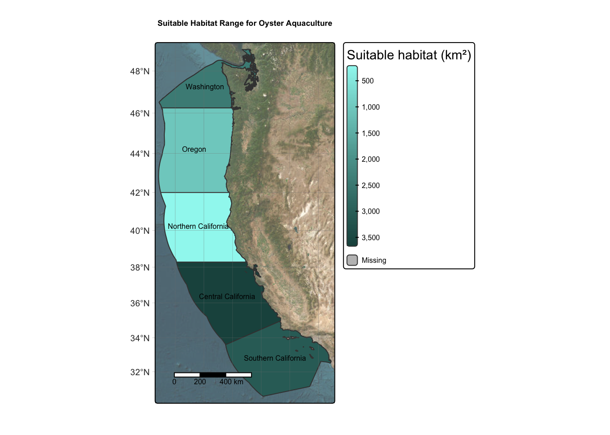

| Species | Temperature Range | Depth Range |
|---|---|---|
| Oysters | 11-30°C | 0-70 m |
| Blue Mussel | 5-20°C | 0-60 m |
Assessing Potential Species for Marine Aquaculture in West Coast EEZs
Have you ever thought about the environmental impact of the food you eat? If you’re anything like me, you may have tried going vegan or vegetarian at some point, hoping to reduce your carbon footprint by cutting out beef and other protein sources often linked to greenhouse gas emissions. While individual choices are important, solutions that are practical and scalable—like marine aquaculture—can have a far more direct and meaningful impact on mitigating climate change.
What is marine aquaculture?
“Marine aquaculture refers to the breeding, rearing, and harvesting of aquatic plants and animals. It can take place in the ocean, or on land in tanks and ponds.” (NOAA Fisheries (2025)).
To many, farming in the ocean might sound novel—but it’s actually been a part of life in some regions for thousands of years. The Kwakwaka’wakw, the Indigenous people of the Pacific Northwest Coast, living in northern Vancouver Island and mainland British Columbia, were known for harvesting clams in clam gardens, sustaining their populations for thousands of years (Groesbeck et al. (2014)).
As the demand for seafood increases, reliance soley on wild-caught populations, which has been ins teady decline since the 1980s (Aquarium of the Pacific (n.d.)) is not sustainable. Marine aquaculture has become popular for its use as a more suitable protein option than land-based meat production and wild-caught sources, with some studies showing that marine aquaculture greenhouse gas emissions could be 40% lower than emissions from land-based aquaculture (Arévalo-Martínez (2024)). It complements current wild fisheries, produces jobs, and can meet the demand for seafood as human populations continue to grow.
As mentioned by Gentry et. al, limitations to marine aquaculture include ocean depth, marine protected areas, global fishing and shipping lanes, and environmental factors (Gentry et al. (2017)). The article mentioned that proper planning is key to succesful marine aquaculture. That includes choosing the correct species based on environmentla factors and the species’ suitability.
Overview of study
In this study, I investigated where to prioritize marine aquaculture in the West Coast of the United States within Exclusive Economic Zones (EEZ) for two focal species: oysters and blue mussels. Exclusive Economic Zones are regions of the ocean that are open for a country to explore. The U.S. West coast has five regions. (NOAA Ocean Service (2024)).
The Data I Used
The data for this study includes a shapefile for the West Coast EEZ, bathymetry (depth) raster, and sea surface temperature raster.
Species data
The two focal species for this study are oysters and blue mussels (Mytilus edulis). Both of these bivalve species are found in the Pacific ocean and have the ability to serve as a great protein source for marine aquaculture. I found their depth and temperature requirements from SeaLifeBase (n.d.) and Zagata et al. (2008).

 source:MarLIN – The Marine Life Information Network (n.d.)
source:MarLIN – The Marine Life Information Network (n.d.)
Sea Surface Temperature Data
In this study, I will use average annual sea surface temperature (SST) from 2008 to 2012. The data is from NOAA’s Daily Global Satellite Sea Surface Temperature anomaly NOAA Coral Reef Watch (n.d.).
#......Import Sea Surface Temperature Data......
# Read in SST rasters in a raster stack
sst_fp <- list.files(here("posts", "marine-aquaculture-blog", "data"), pattern = "average_annual_sst_", full.names = TRUE)
# Stack
sst <- rast(sst_fp) %>%
project("EPSG:4326") # project CRS
# Clear working environment
rm(list = 'sst_fp')In this section, I will process the sea surface temperature (SST) data in order to combine it with the depth data. The SST data needs to be averaged and converted into Celsius.
#......Data Wrangling......
# Find the average sea surface temperature from 2008-2012
avg_sst <- mean(sst)
# Convert average SST from Kelvin to Celsius
avg_sst_c <- avg_sst - 273.15
# Clear working environment
rm(avg_sst)Depth Data
In this study, I will use bathymetry data from the General Bathymetric Chart of the Oceans .
#......Import Depth Data......
depth <- rast(here("posts", "marine-aquaculture-blog", "data", "depth.tif")) %>%
project("EPSG:4326") # project CRSIn this section, I matched the resolution (number and size of pixels) of depth to match avg_sst_c.
#......Crop depth raster......
# Create extent of 'avg_sst_c'
ext_sst <- ext(avg_sst_c)
# Crop depth raster to match the extent of the SST raster
depth_cropped <- crop(depth, ext_sst)
# Ensure data was cropped
if(ncell(depth) == ncell(depth_cropped)) {
warning("data did not crop!")
} else {
message("data cropped!")
}data cropped!#......Resample......
# Resample to match resolutions
depth <- resample(depth_cropped, avg_sst_c, method = "bilinear") # method bilinear
# Check that the resolutions match
if (all(res(depth) == res(avg_sst_c))) {
message("Resolutions match!")
} else {
warning("Resolutions do not match")
}Resolutions match!# Remove 'depth_cropped' from environment
rm(list = 'depth_cropped')#......CRS check......
# Check that CRSs match
if (crs(depth) != crs(avg_sst_c)) {
warning("Coordinate refrence systems DO NOT match!")
} else {
message("Coordinate refrence systems match!")
} Coordinate refrence systems match!Find suitable locations for species
In this section I will find suitable locations (area in km) that satisfy the specific sea surface temperature and depth range for oysters.
Reclassificaiton Matrix
In order to find suitable locations for the oyster, I need to reclassify avvg_sst_c and depth data into locations that are suitable for oysters. This process returns the cells in the raster that satisfy the criteria.
- 1: suitable locations
- 0: unsuitable locations
#......Reclassification matrix: sea surface temperature......
sst_matrix <- matrix(c(-Inf, 11, 0, # values -Inf to 11 = 0
11, 30, 1, # values 11 to 30 = 1
30, Inf, 0), # values 30 to Inf = 0
ncol = 3, byrow = TRUE)
# Apply the matrix to reclassify the raster, making all cells 0 or 1
sst_rcl <- terra::classify(avg_sst_c, rcl = sst_matrix)
# Assign Nan values as NA
values(sst_rcl)[is.nan(values(sst_rcl))] <- NA
# Ensure SST was reclassified
if (identical(values(avg_sst_c), values(sst_rcl))) {
warning("SST not reclassified!")
} else {
message("SST reclassified!")
}SST reclassified!#......Reclassification matrix: Depth......
depth_matrix <- matrix(c(-Inf, -70, 0, # values -Inf to 70 = 0
-70, 0, 1, # values 70 to 0 = 1
0, Inf, 0), # values
ncol = 3, byrow = TRUE)
# Apply the matrix to reclassify the raster, making all cells 0 or 1
depth_rcl <- terra::classify(depth, rcl = depth_matrix)
# Ensure depth was reclassified
if (identical(values(depth), values(depth_rcl))) {
warning("Depth not reclassified!")
} else {
message("Depth reclassified!")
}Depth reclassified!I now have suitable locations for the specific sea surface temperature and depth specifications for oysters.
#......Find suitable locations......
# Multiply reclassification matrices to find suitable locations
# creates matrix of 0/1 where 0 = not suitable and 1 = suitable
suitable_locations <- sst_rcl * depth_rcl
# Convert all zeros to NA values
suitable_locations[suitable_locations == 0] <- NA
# Find the area of suitable locations for oysters
suitable_area <- expanse(suitable_locations, unit = "km")Determine the most suitable EEZ
In this section, I will determine the total suitable area within each EEZ for oysters. This data is from Marineregions.org.
#......Import Data and Check CRS......
# Import data
eez <- st_read(here("posts", "marine-aquaculture-blog", "data", "wc_regions_clean.shp"))
# Check if CRS match
if (st_crs(eez) == st_crs(4326)) {
message("CRS match with depth and average sea surface temperature")
} else {
warning("CRS does not match! Transforming required.")
}Find suitable areas within West Coast EEZs
In this section I will find the suitable areas within West Coast EEZs.
#......Apply mask ......
# Mask suitable locations to eez habitat
eez_cells <- mask(suitable_locations, eez)
if (ncell(suitable_locations) == ncell(eez_cells)) {
message("Mask worked!")
}else {
warning("Mask did not work")
}Mask worked!#......Calculate total area ......
# make sure eez and eez cells extent match
if (ext(eez) == ext(eez_cells)) {
message("Extents match!")
} else {
warning("Extents don't match! Cropping eez_cells to match eez extent...")
eez_cells <- crop(eez_cells, ext(eez))
}Warning: Extents don't match! Cropping eez_cells to match eez extent...# Calculate cell size area of each raster cell
eez_cells_area <- cellSize(eez_cells, unit = "km")
#......Find total area......
# Rasterize eez
rast_eez <- rasterize(eez, eez_cells, field = "rgn_id")
# perform zonal operation
area_by_eez<- zonal(x = eez_cells_area * eez_cells, z = rast_eez, fun = "sum", na.rm = TRUE)#......Join data......
eez_suitable_locations <- area_by_eez %>%
left_join(eez, by = "rgn_id")
# clean up data frame
eez_suitable_locations <- eez_suitable_locations %>%
rename(area_suitable_km = area) %>% # rename area
select(rgn, area_suitable_km, geometry) # select for region, area, and geometry to plot
#.....Convert to sf object....
eez_suitable_locations <- st_as_sf(eez_suitable_locations)| Regions | Suitable Habitat (km) |
|---|---|
| Oregon | 1028.886 |
| Northern California | 194.126 |
| Central California | 3655.923 |
| Southern California | 3098.006 |
| Washington | 2421.627 |
Map: Oyster Suitable Area
Now I will map the suitable locations for oyster marien aquaculture.
#| label: oyster map
oyster_map <- tm_tiles("Esri.WorldImagery", alpha = 0.7) + # basemap with tm_tiles()
tm_shape(eez_suitable_locations) +
tm_polygons(fill = "area_suitable_km" , # fill polygons based on suitable area
style = "cont", # continuous value scale
palette = c("#9ef7f0", "#1d524d"), # palette of colors
title = "Suitable habitat (km²)", size = 0.8) + # legend title
tm_layout(legend.outside = TRUE,
legend.text.size = 0.5) + # legend position and size
tm_title("Suitable Habitat Range for Oyster Aquaculture", fontface = "bold", size = 0.8) + # title
tm_graticules(lwd = 0.2) + # gridlines
tm_scalebar(position = c("left", "bottom"), text.size = 0.5) + #scalebar
tm_text("rgn", # overlay text for region
size = 0.5,
xmod = -0.2,
ymod = 0.2)── tmap v3 code detected ───────────────────────────────────────────────────────[v3->v4] `tm_polygons()`: instead of `style = "cont"`, use fill.scale =
`tm_scale_continuous()`.
ℹ Migrate the argument(s) 'palette' (rename to 'values') to
'tm_scale_continuous(<HERE>)'
[v3->v4] `tm_polygons()`: migrate the argument(s) related to the legend of the
visual variable `fill` namely 'title' to 'fill.legend = tm_legend(<HERE>)'
[tm_polygons()] Argument `size` unknown.# View map
oyster_map [plot mode] fit legend/component: Some legend items or map compoments do not
fit well, and are therefore rescaled.
ℹ Set the tmap option `component.autoscale = FALSE` to disable rescaling.
The map above depicts the suitable locations for oyster aquaculture within West Coast EEZs. As you can see, the regions with the most suitable habitat are Central and Southern California.
Generalizable function
Now that I have a worfklow for determining the suitable locations for oysters, I will create a generalizable function that can be applied to any species of interest. I will test this function for my second focal species blue mussels.
# Define function name and arguments
suitability_fun <- function(sst_min, sst_max, depth_min, depth_max, species) {
# 1. Reclassification matrices
# Define SST reclassification matrix
sst_matrix <- matrix(
c(
-Inf, sst_min, 0, # below min sst = 0/unsuitable
sst_min, sst_max, 1, # range of sst = 1/suitable
sst_max, Inf, 0 # above max sst = 0/unsuitable
),
ncol = 3, byrow = TRUE
)
# Define Depth reclassification matrix
dmin <- min(depth_min, depth_max) # ensure depth min is the smaller depth
dmax <- max(depth_min, depth_max)
depth_matrix <- matrix(
c(-Inf, -dmax, 0,
-dmax, -dmin, 1,
-dmin, Inf, 0),
ncol = 3, byrow = TRUE
)
# 2. Reclassify SST and Depth data
# Reclassify SST
sst_rcl <- terra::classify(avg_sst_c, rcl = sst_matrix)
# Fill NAN values with NAs
values(sst_rcl)[is.nan(values(sst_rcl))] <- NA
# Reclassify depth
depth_rcl <- terra::classify(depth, rcl = depth_matrix)
# 3. Find suitable locations
# Multiply reclassifications to create matrix of 0/1
suitable_locations <- sst_rcl * depth_rcl
# Convert zeros to NAs
suitable_locations[suitable_locations == 0] <- NA
# Apply mask to keep only suitable raster cells in eez
eez_cells <- mask(suitable_locations, eez)
# Find cell area
eez_cells_area <- cellSize(eez_cells, unit = "km")
# 4. Zonal operation
# Rasterize eez
rast_eez <- rasterize(eez, eez_cells, field = "rgn_id")
# perform zonal operation
area_by_eez<- zonal(x = eez_cells_area * eez_cells, z = rast_eez, fun = "sum", na.rm = TRUE)
# 5. Join data
eez_suitable_locations <- area_by_eez %>%
left_join(eez, by = "rgn_id") %>% # join on 'rgn_id'
rename(area_suitable_km = area) %>% # rename column
select(rgn, area_suitable_km, geometry) # select certain columns for df
# 6. Convert to sf object
eez_suitable_locations <- st_as_sf(eez_suitable_locations)
# 7. Create map
species_map <- tm_tiles("Esri.WorldImagery", alpha = 0.7) + # basemap with tm_tiles()
tm_shape(eez_suitable_locations) +
tm_polygons(fill = "area_suitable_km" , # fill polygons based on suitable area
style = "cont", # continuous value scale
palette = c("#9ef7f0", "#1d524d"), # palette of colors
title = "Suitable habitat (km²)", size = 0.8) + # legend title
tm_layout(legend.outside = TRUE,
legend.text.size = 0.5) + # legend position and size
tm_title(
paste0("Suitable Habitat Range for ", species, " Aquaculture"),
fontface = "bold",
size = 1
)+ # title
tm_graticules(lwd = 0.2) + # gridlines
tm_scalebar(position = c("left", "bottom"), text.size = 0.5) + #scalebar
tm_text("rgn", # overlay text for region
size = 0.5,
xmod = -0.2,
ymod = 0.2)
# return species map and table of eez suitable area
return(species_map)
}Apply function: Blue Mussels
In this section I will apply the suitability_fun function to my second focal species blue mussels.
suitability_fun(
sst_min = 5, # define min stt value
sst_max = 20, # define max sst value
depth_min = 0, # define min depth value
depth_max = 60, # define max depth value
species = "Blue Mussel" # define species name
)── tmap v3 code detected ───────────────────────────────────────────────────────[v3->v4] `tm_polygons()`: instead of `style = "cont"`, use fill.scale =
`tm_scale_continuous()`.
ℹ Migrate the argument(s) 'palette' (rename to 'values') to
'tm_scale_continuous(<HERE>)'
[v3->v4] `tm_polygons()`: migrate the argument(s) related to the legend of the
visual variable `fill` namely 'title' to 'fill.legend = tm_legend(<HERE>)'
[tm_polygons()] Argument `size` unknown.
[plot mode] fit legend/component: Some legend items or map compoments do not
fit well, and are therefore rescaled.
ℹ Set the tmap option `component.autoscale = FALSE` to disable rescaling.
Reflection: The map above depicts the suitable locations for blue mussel aquaculture within West Coast EEZs. As you can see, the regions with the most suitable habitat are Washington. The rest of the California and Oregon coast contain less suitable locations probably due to the temperature range for blue mussels, who prefer colder temperatures.
Final Thoughts
This project investigated the suitable habitats for two focal species –oyster and blue mussel– for marine aquaculture in West Coast Economic Exclusive Zones. Although I only mapped two species, the function suitability_fun can be used on a variety of species of interest for marine aquaculture. This opportunity to expand
References
SeaLifeBase. (n.d.). Summary for Species #47622 [Web page]. Retrieved November 29, 2025, from https://www.sealifebase.ca/summary/47622
Zagata, C., Young, C., Sountis, J., & Kuehl, M. (2008). Mytilus edulis [Web page]. Retrieved November 29, 2025, from https://animaldiversity.org/accounts/Mytilus_edulis/
GEBCO Compilation Group. (2022). GEBCO_2022 Grid [Data set]. https://doi.org/10.5285/e0f0bb80-ab44-2739-e053-6c86abc0289c
NOAA Coral Reef Watch. (n.d.). 5‑km Sea Surface Temperature Anomaly (SSTA) product [Data set]. Retrieved November 29, 2025, from https://coralreefwatch.noaa.gov/product/5km/index_5km_ssta.php
Flanders Marine Institute. (2025). Maritime Boundaries Geodatabase: Exclusive Economic Zones (EEZ) [Data set]. Retrieved November 29, 2025, from https://www.marineregions.org/eez.php
“Mytilus edulis.” MarLIN – The Marine Life Information Network, n.d., https://www.marlin.ac.uk/assets/images/marlin/species/web/o_mytedu.jpg. Accessed 29 Nov. 2025.
References
Aquarium of the Pacific. n.d. “Marine Aquaculture.” n.d. https://www.aquariumofpacific.org/seafoodfuture/marine_aquaculture.
Arévalo-Martínez, D. L. 2024. “Offshore Aquaculture Greenhouse Gas Emissions Based on Ocean Net Primary Productivity.” Nature Food 5: 548–49. https://doi.org/10.1038/s43016-024-01005-x.
Gentry, Ryan R., Heike E. Froehlich, Danielle Grimm, Peter Kareiva, Michael Parke, Michael Rust, Steven D. Gaines, and Benjamin S. Halpern. 2017. “Mapping the Global Potential for Marine Aquaculture.” Nature Ecology & Evolution 1: 1317–24. https://doi.org/10.1038/s41559-017-0257-9.
Groesbeck, Amy S., Katherine Rowell, Dana Lepofsky, and Amanda K. Salomon. 2014. “Ancient Clam Gardens Increased Shellfish Production: Adaptive Strategies from the Past Can Inform Food Security Today.” PloS One 9 (3): e91235. https://doi.org/10.1371/journal.pone.0091235.
MarLIN – The Marine Life Information Network. n.d. “Mytilus Edulis.” n.d. https://www.marlin.ac.uk/assets/images/marlin/species/web/o_mytedu.jpg.
{kind=link}
NOAA Coral Reef Watch. n.d. “5-Km Sea Surface Temperature Anomaly (SSTA) Product.” Data set. https://coralreefwatch.noaa.gov/product/5km/index_5km_ssta.php.
NOAA Fisheries. 2025. “Marine Aquaculture.” 2025. https://www.fisheries.noaa.gov/insight/marine-aquaculture.
NOAA Ocean Service. 2024. “What Is the EEZ?” 2024. https://oceanservice.noaa.gov/facts/eez.html.
SeaLifeBase. n.d. “Summary for Species #47622.” n.d. https://www.sealifebase.ca/summary/47622.
Zagata, C., C. Young, J. Sountis, and M. Kuehl. 2008. “Mytilus Edulis.” 2008. https://animaldiversity.org/accounts/Mytilus_edulis/.
Citation
BibTeX citation:
@online{segarra2025,
author = {Segarra, Isabella},
title = {Investigating {Exclusive} {Economic} {Zones} {(EEZ)} for
{Marine} {Aquaculture}},
date = {2025-12-06},
url = {https://isabellasegarra.github.io/posts/marine-aqaculture-blog},
langid = {en}
}
For attribution, please cite this work as:
Segarra, Isabella. 2025. “Investigating Exclusive Economic Zones
(EEZ) for Marine Aquaculture.” December 6, 2025. https://isabellasegarra.github.io/posts/marine-aqaculture-blog.